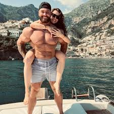
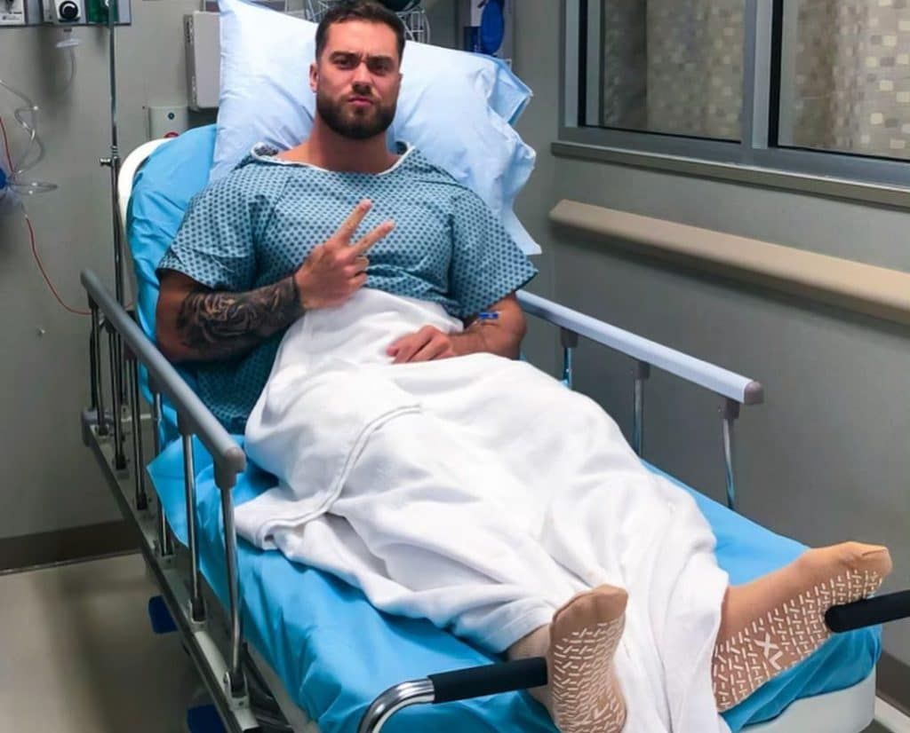

¿Quien es?
Christopher Adam Bumstead es un culturista profesional canadiense, miembro oficial de la Federación Internacional de Fisicoculturismo

Christopher Adam Bumstead es un culturista profesional canadiense, miembro oficial de la Federación Internacional de Fisicoculturismo
Bumstead es el actual campeón de Mr. Olympia Classic Physique, habiendo ganado la competición en 2019, 2020, 2021, 2022 y 2023. También fue subcampeón en 2017 y 2018.

Bumstead nació y se crio en Ottawa, Ontario, donde participó en múltiples deportes a lo largo de su infancia, jugando fútbol, béisbol, baloncesto y hockey en la escuela secundaria. Comenzó a levantar pesas a la edad de 14 años, y entre el noveno y el duodécimo grado, pasó de 77 a 102 kilogramos, aumentando sobre todo el tamaño de sus piernas.3 Después de construir lo que pensó que era un buen físico, Bumstead conoció al novio de su hermana, el culturista profesional Iain Valliere, quien lo ha entrenado desde entonces
A pesar de su gran trayectoria, no todos saben que este culturista ha estado lidiando con una enfermedad extraña desde hace tiempo. A pesar de haberlo mencionado en las redes sociales, muchos todavía desconocen la naturaleza de esta enfermedad que ha sido una constante en su vida. En el año 2018, esta enfermedad le afectó fuertemente, provocando que quedara en segundo lugar en una de las competencias más importantes de culturismo.
